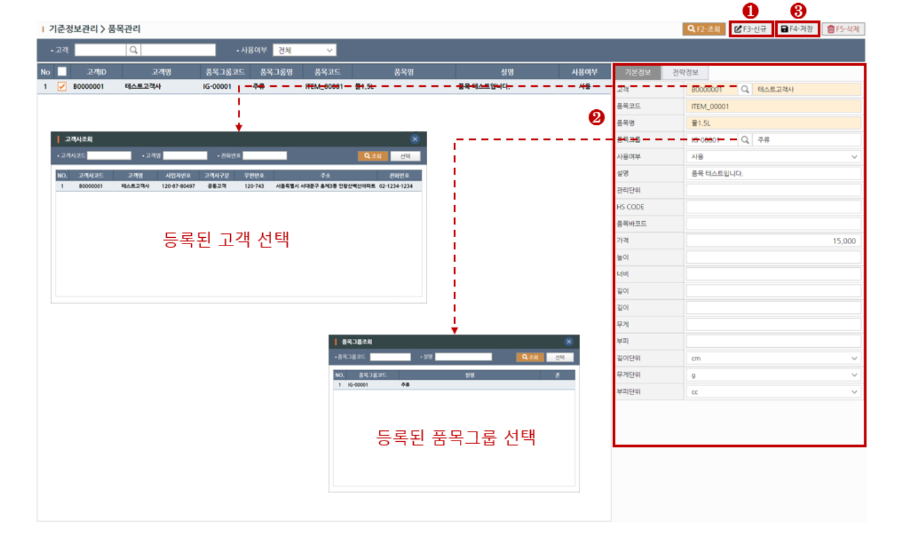
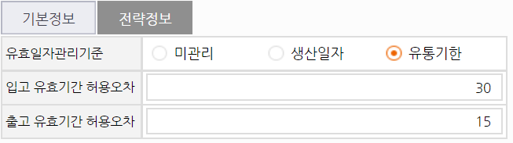
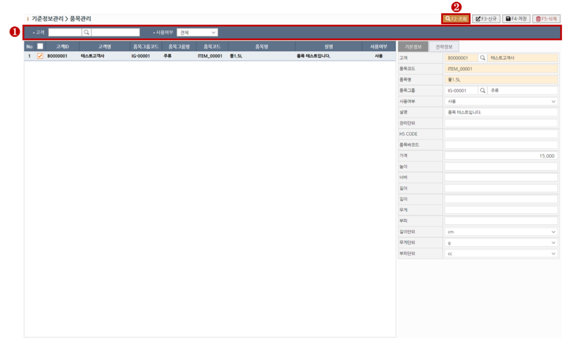
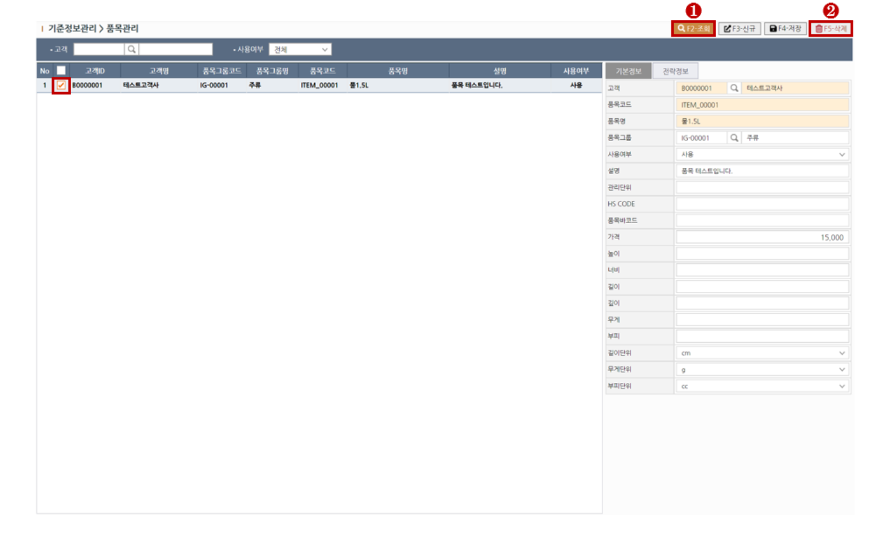

1. 품목 생성하기
> STEP-1 새로운 품목 추가를 원하실 경우 상단의 신규(F3)버튼을 클릭하여 행을 추가합니다.
> STEP-2 품목 기본정보 및 전략정보를 입력합니다. 노란색필드는 필수입력입니다.
> STEP-3 정보입력을 완료하셨다면 상단의 저장(F4)버튼을 클릭하여 저장합니다.

※ 필드설명1 - 품목코드
[품목코드]필드는 중복으로 저장하실 수 없습니다.
※ 필드설명2 - 전략정보
품목별로 입/출고전략을 설정할 수 있습니다. [품목관리] 화면에서 전략정보 탭을 클릭합니다.

1) 해당품목에 입/출고전략 설정을 원하지 않을 경우 [유효일자관리기준]필드의 값을 "미관리"로 설정합니다.
2) [유효일자관리기준]을 설정하고 입/출고시 일자에 제한을 주고 싶은 경우 [입/출고 유효기간 허용오차] 각 필드에 값을 일 단위로 설정합니다.
2. 조회하기
> STEP-1 조회목록의 필터링을 원하실땐 조회조건을 입력합니다.
> STEP-2 상단의 조회(F2)버튼을 클릭하여 조회합니다.

3. 삭제하기
> STEP-1 상단의 조회(F2)버튼을 클릭하여 대상을 조회합니다.
> STEP-2 대상을 그리드에서 체크한뒤 그리드 상단의 삭제버튼을 클릭하여 대상을 삭제합니다.
